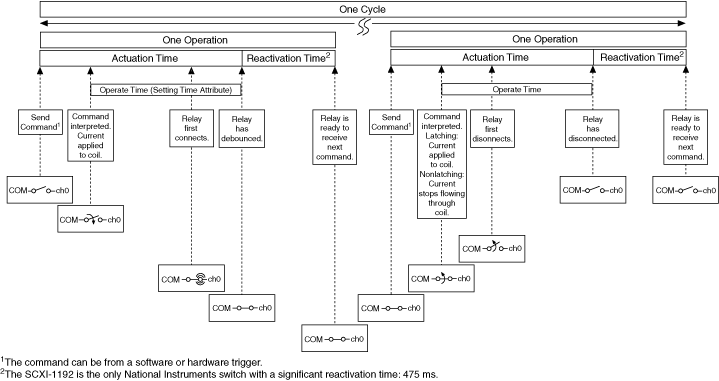

下图表示机电 SPDT 通用继电器在一个周期内执行的过程。
下图表示机电 SPST 通用继电器在一个周期内执行的过程。

对于某些情况，您可能需要增加默认建立时间。有关增加默认建立时间的更多信息，请参阅增加额外建立时间。
提交有关此主题的反馈。 访问ni.com/support以获得技术支持。
 提交有关此主题的反馈。
提交有关此主题的反馈。 访问ni.com/support以获得技术支持。 提交有关此主题的反馈。 访问ni.com/support以获得技术支持。
访问ni.com/support以获得技术支持。 提交有关此主题的反馈。 访问ni.com/support以获得技术支持。